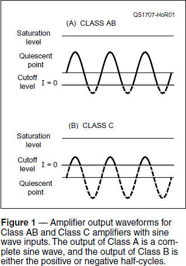
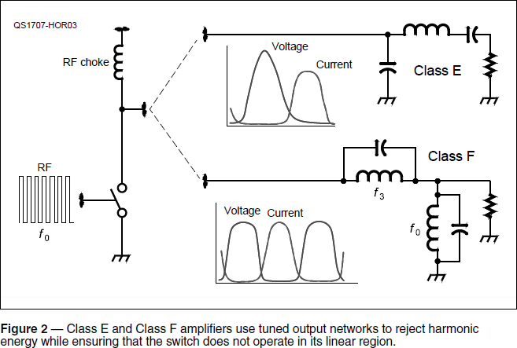

Experiment #174 — Switching Amplifiers
As part of our General and Amateur Extra class license studies, we have to learn a few things about amplifier classes. Class refers to how the amplifying devices (tube or transistor) operate, and how the output impedance matching and filter circuits work.
Class Background
The early Hands-On Radio experiments (#1 and #2, for example) stress the importance of quiescent- or Q-point.1 The Q-point is the combination of voltage and current in a circuit when no input signal is present.
The output will follow a load line (see Experiment #77) that describes voltages and currents possible for the load at the amplifier’s output. The device’s output current can be increased until it reaches saturation, the point at which further changes in input have no effect. Similarly, the output current can be reduced to zero at cutoff.
The location of the Q-point on the load line determines how “close” the amplifier is to saturation or cutoff. The amplifier circuit’s configuration, Q-point location, load, gain, and output circuit characteristics all combine to determine the amplifier’s output waveform, linearity, and efficiency. There are several common combinations and resulting behaviors of the amplifier — these are called amplifier classes.
Classes A, B, and AB
The easiest way to compare these classes is in terms of conduction angle — the number of degrees in one cycle during which the device is conducting current in its linear region, from 0° to 360°.
In Class A operation, the device (Figure 1A) conducts during the entire cycle; a conduction angle of 360º. If the load line is linear and the input doesn’t “overdrive” the circuit out of its linear region (between saturation and cutoff), the output waveform is an exact reproduction of the input. This is a true “linear amplifier.” Class A amplifiers have poor efficiency (about 50% maximum) because of their continuous current.

In Class B operation, the conduction angle is 180º (half of the cycle). Class B amplifiers are more efficient (a maximum of 78.5%) than Class A, because they are only in their linear region half the time. But they are quite non-linear. Class B amplifiers typically use a pair of devices that conduct on alternate half cycles (push-pull operation). Their outputs are combined to produce a complete output signal.
Class AB operation (Figure 1A) “splits the difference” between Class A and B with a conduction angle between 180° and 360°. This is a compromise — Class AB amplifiers are more linear than Class B, and more efficient than Class A. Class AB is very popular for SSB operation, whether tube or transistor. Some readers are probably thinking, “But Class AB is still really non-linear. How can that work and still put out a clean signal?” Hold that thought.
Class C and Harmonics
The final “traditional” class is Class C (Figure 1B), in which the device is in its linear region for a short period, with a conduction angle of only 25 – 50% (90 – 180º). The output current consists of sine-like pulses. Class C amplifiers are very non-linear and are used to amplify signals for which only the frequency is preserved — FM and CW, for example. Because the device is only in the linear region for short periods, the efficiency of Class C amplifiers can be as high as 85%.
Clearly, Class AB, B, and C amplifiers generate a lot of harmonic distortion, because they cut off some or most of the waveform. (Remember that we are talking about an RF waveform, not audio.) There would be significant in-band distortion products as well, particularly for Class C.
Let’s do an experiment. Build the common-emitter amplifier of Experiment #1 with a 50 kΩ pot instead of R1 and R2. Adjust the bias to change the Q-point, and with a 1 kHz input signal, observe the output signal spectrum by using a sound card audio analyzer (see Experiments #64 and #65). Compare the spectra for Class A, B, AB, and C operation.
To get rid of the harmonic energy requires the output circuit to act as a filter as well as provide an impedance match. When you adjust the TUNE function of a tube amplifier, you are bringing the output circuit to resonance where it acts as a band-pass filter. (If you have a linear amplifier, tune it up at reduced power into a dummy load, then listen for your second or third harmonic on a second receiver. Change the tuning of the amplifier while watching the S-meter to get an idea of signal level. You should be able to see (and hear) the effects of mistuning.
Class D and Switching Amplifiers
Class D goes farther than Class C — the amplifier acts as a pulse width modulated (PWM) switch by setting the bias and drive so that the device is either fully on (saturated) or fully off (cutoff). As Experiment #9 shows, these two states have low-power dissipation compared to the linear region. Class D is a type of switching amplifier.
The switch operates at fPWM, which is many times the frequency of the signal to be amplified. The duration of each pulse is controlled by the amplitude of the input waveform to change the pulse’s average energy. The switch is turned on and off so rapidly that it spends very little time in the linear region, and its conduction angle is very small. This creates a series of current pulses.
A low-pass filter then removes the high-frequency switching components and leaves only the desired average-energy signal. Essentially, a Class D amplifier is a switching mode power supply, with the input signal acting as the output voltage control signal.
Because the switching frequency must be many times the frequency of the signals to be amplified, Class D circuits are only used for audio. The switching frequency is typically greater than 100 kHz and easily separated from the desired audio range below 20 – 30 kHz. There are many Class D audio amplifier integrated circuits (ICs), and because they are so efficient (more than 90%), they are the circuit of choice in battery-powered gear like smartphones and music players. (The Sparkfun BOB-11044 Class D amplifier kit based on the TPA2005D1 chip — www.sparkfun.com — only costs a few dollars and makes a great experiment.)
Class E and F
At RF, the frequency of the switching pulses, f0, is so high that it takes more work to keep the device out of the linear region. Remember that current should be high or voltage should be high, but not both at the same time. This is accomplished by the tuned output networks, as shown in Figure 2, described more completely by Iulian Rosu, YO3DAC/VA3IUL.2
For Class E, the output network’s series-LC network is tuned to the desired RF frequency of operation. The capacitance across the switch is charged and discharged at the same rate. The tuned circuit causes voltage at the device to go to zero just as the current is beginning to increase. This keeps switching losses low, and the tuned circuit takes care of the harmonics. A separate tuned network is required for each band of operation.

The related Class F amplifier uses a parallel-LC trap in the output circuit to block f3, the third and strongest harmonic of a square wave, while passing the fundamental (f0). Again, with careful tuning, the voltage and current are never maximum at the same time, the switch stays out of its linear region, and efficiency is high.
Out-Classed
There are other classes, as well. Class G is similar to a Class AB amplifier, but switches between two voltage levels to reduce power dissipation at low signal levels. Class I uses two devices driven with complementary pulse duty cycles to cancel harmonics and follow the input waveform. Class S is a variation on Class D, and Class T uses digital signal processing (DSP) to optimize pulse widths in a Class D amplifier for better performance.3
Notes
1All Hands-On Radio experiments are available online to ARRL members at www.arrl.org/hands-on-radio.
2I. Rosu, YO3DAC/VA3IUL, “RF Power Amplifiers,” www.qsl.net/va3iul.
3“Amplifier Classes,” Electronic Tutorials, www.electronics-tutorials.ws/amplifier/amplifier-classes.html.